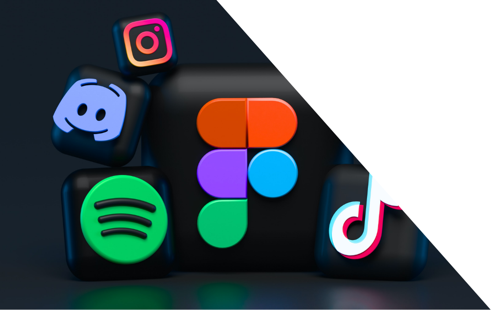
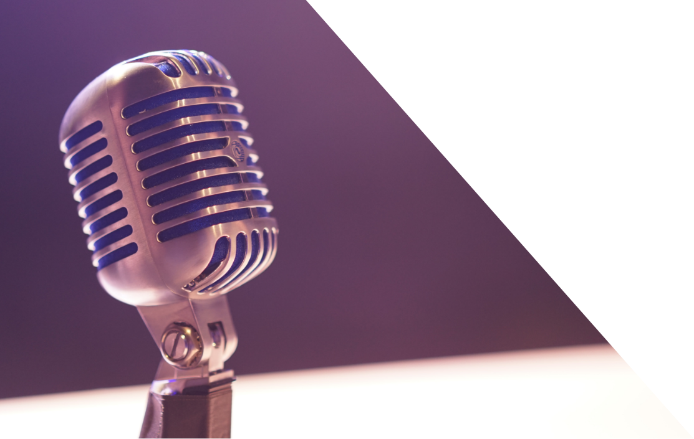

Je passe la plupart de mon temps sur les
réseaux sociaux, que ce soit pour me tenir
informer, discuter ou partager. Quand je
ne suis pas sur les réseaux sociaux du type
Instagram, Twitter, etc, je décide d’aller sur
YouTube ou sur Twitch pour me divertir ou
apprendre de nouvelles choses.

Lorsque je suis en déplacement ou bien
même chez moi, j’écoute la radio, soit pour
me divertir, m’informer
ou suivre un évènement sportif en direct.